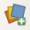

III. Recherche et ajout de données
III.2 Ajout de données via des flux
- Qu'est-ce qu'un flux WMS ou WFS ?
- Ajout de données via un flux WMS : carte géologique
- Ajout de données via un flux WFS : cours d'eau
- Ajout de données WMS ou WFS via le panneau explorateur
- Avantages et inconvénients des flux
- Quelques adresses de flux WMS et WFS
Qu'est-ce qu'un flux WMS ou WFS ?
Il est possible de visualiser directement dans un SIG des données accessibles sur un serveur, sans devoir préalablement les télécharger sur votre ordinateur. Ceci se fait via des flux. Les deux types de flux les plus courant permettant ceci sont les flux WMS (Web Map Service) et WFS (Web Feature Service).
- Les flux WMS vont vous permettre d'afficher des couches raster, non modifiables.
- Les flux WFS vous permettront d'afficher des couches vecteur, non directement modifiables mais que vous pourrez ensuite télécharger au format shapefile.
Ajout de données via un flux WMS : carte géologique
Lancez QGIS si ce n'est pas déjà fait, ou bien créez un nouveau projet.
 Ajoutez-y la couche DEPARTEMENT_CREUSE.gpkg que vous trouverez dans le dossier TutoQGIS_03_RechercheDonnees/donnees.
Donnez au projet le même SCR que la couche DEPARTEMENT_CREUSE.shp.
Nous allons maintenant ajouter au projet la carte géologique de la France au 1/1 000 000è via un flux WMS.
Cliquez sur l'icône du gestionnaire des sources de données, allez dans la rubrique WMS/WMTS :
{kind=link}
Cliquez sur le bouton Nouveau pour créer une nouvelle connexion. La fenêtre suivante apparaît :
{kind=link}
- Nom : tapez le nom de votre choix, par exemple BRGM
- URL : tapez l’URL suivante, qui correspond à l'adresse du serveur WMS du BRGM : https://geoservices.brgm.fr/geologie
Les adresses des flux produits par le Bureau des Recherches Géologiques et Minières (BRGM) sont disponibles ici.
Laissez les autres paramètres tels quels et cliquez sur OK. Vous voilà à nouveau dans la fenêtre d'ajout d'une couche WMS :
- Après avoir vérifié que votre connexion est bien sélectionnée dans la liste déroulante en haut de la fenêtre, cliquez sur Connexion
{kind=link}
- Rendez-vous dans la rubrique 0 GEOSERVICES_GEOLOGIE → 1 GEOLOGIE et sélectionnez la couche correspondant à la carte géologique image de la France au 1/1 000 000 (million).
- Vérifiez que les SCR de cette couche soit bien RGF93 / Lambert-93 (code EPSG 2154) afin que la couche ait le même SCR que notre projet : il faudra peut-être cliquer que le bouton à droite du SCR pour sélectionner le Lambert 93
- Cliquez sur Ajouter, patientez... Une fois la couche affichée, vous pouvez fermer la fenêtre du gestionnaire de sources de données
- Modifiez éventuellement votre niveau de zoom : cette carte étant au 1/1 000 000, la couche n'est visible qu'autour de cette échelle (vous pouvez lire l'échelle en cours dans la barre en bas de la fenêtre de QGIS)
Vous devriez obtenir quelque chose de similaire à ceci :
{kind=link}
Il peut être nécessaire de changer l'ordre des couches en les faisant glisser dans la table des matières, et de modifier le style de la couche du département de la Creuse (ici, pas de remplissage et une bordure blanche).
Pour aller plus loin : le niveau de zoom auquel une couche est visible est parfois indiqué dans le résumé ; sinon, il est possible d'interroger le serveur qui propose les couches, en allant par exemple ici à l'URL http://geoservices.brgm.fr/geologie?service=wms&request=GetCapabilities dans un navigateur internet, puis en recherchant les balises MinScaleDenominator et MaxScaleDenominator pour la couche choisie. Pour en savoir plus, rendez-vous sur le wiki du GeoRezo.
Ajout de données via un flux WFS : cours d'eau
Le but va être ici d'ajouter une couche WFS de cours d'eau disponible via le Sandre (Service d'Administration Nationale des Données et Référentiels sur l'Eau). Les adresses des flux du Sandre sont disponible sur cette page.
Cette opération est similaire à celle décrite ci-dessus pour une couche WMS.
Cliquez sur l'icône du gestionnaire des sources de données, rubrique WFS / OGC API - Features :
{kind=link}
Cliquez sur le bouton Nouveau pour créer une nouvelle connexion. La fenêtre suivante apparaît :
{kind=link}
- Nom : tapez le nom de votre choix, par exemple Sandre
- URL : tapez l'adresse https://services.sandre.eaufrance.fr/geo/sandre
Cette url est disponible sur le site du Sandre.
Laissez les autres paramètres tels quels et cliquez sur OK. Vous voilà à nouveau dans la fenêtre d'ajout d'une couche WFS :
{kind=link}
- Après avoir vérifier que votre connexion est bien sélectionnée dans la liste déroulante en haut de la fenêtre, cliquez sur Connexion
- En vous aidant éventuellement d'un filtre (plans), sélectionnez la couche correspondant aux Plans d'eau - BD Topage - Métropole - 2022
- Vérifiez que le SCR soit bien le Lambert 93 RGF93 (code EPSG 2154) afin que toutes nos couches aient le même SCR, en cliquant éventuellement sur le bouton Changer...
- Cliquez sur Ajouter
Vous devriez obtenir quelque chose de similaire à ceci :
{kind=link}
Il peut être nécessaire de changer l'ordre des couches en les faisant glisser dans la table des matières, et de modifier le style de la couche du département de la Creuse. Vu qu'il s'agit ici d'un flux WFS et non WMS, il est également possible de modifier le style des cours d'eau. La carte géologique étant une couche WMS, on ne peut modifier son style mais il est possible de lui donner une transparence afin de l'atténuer.
De même, s'agissant d'un flux WFS, il est possible de sauvegarder les cours d'eau au format vectoriel sur votre ordinateur : clic droit sur la couche → Exporter → Sauvegarder les entités sous...
Ajout de données WMS ou WFS via le panneau explorateur
Une autre méthode, plus rapide, pour créer des connexions et ajouter des couches WMS et WFS est de passer par le panneau explorateur.
Cependant, cette méthode ne permet pas autant de paramétrage que le gestionnaire de sources de données : par exemple, il n'est pas possible de choisir le SCR d'une couche.
Nous allons voir ici comment ajouter une couche de mines accessible via la connexion aux flux WMS du BRGM créée plus haut, en utilisant le panneau explorateur.
Le panneau explorateur permet de charger rapidement des couches, en explorant vos dossiers sur votre ordinateur mais aussi vos connexions à des flux ou des bases de données.
Si vous ne le voyez pas, activez-le dans le Menu Vue → Panneaux → Panneau Explorateur.
Dépliez la rubrique WMS/WMTS en cliquant sur le petit triangle, puis BRGM → Géoservices... → Mines et double-cliquer sur Mines Substances principales - Points pour l'ajouter à QGIS.
{kind=link}
La légende de la couche est lisible dans la liste des couches :
{kind=link}
Attention, si la couche avait été par défaut dans un autre SCR que celui du projet et des autres couches (Lambert 93), il y aurait eu des problèmes d'affichage. Il vaut mieux dans ce cas passer par le gestionnaire de sources de données pour spécifier le SCR voulu, s'il est disponible.
Avantages et inconvénients des flux
Un inconvénient d'utiliser des flux est le temps de chargement et la nécessité d'avoir une connexion internet.
Cependant, ils vous assurent de toujours visualiser la dernière mise à jour des données, vous évitent d'encombrer vos ordinateurs et vous permettent de transmettre des projets QGS à des collègues en étant sûr que ceux-ci puissent en visualiser les données (s'ils sont connectés à internet).
En résumé, c'est probablement l'usage que vous ferez des données qui vous fera opter pour l'une ou l'autre solution.
Quelques adresses de flux WMS et WFS
Vous pouvez trouver ici une liste de flux WFS et WMS, créée par l'utilisateur github igeofr, merci à lui !
Vous pouvez soit ajouter ces flux manuellement, un par un, comme décrit plus haut, en copiant l'url, soit tous les ajouter en même temps. Pour cela, par exemple pour les flux WFS, collez le contenu entier du fichier QGIS_WFS.xml dans un fichier texte vierge, enregistrez ce fichier sous le nom QGIS_WFS.xml. Ensuite, dans QGIS : gestionnaire de sources → WFS ou WMS → Charger → sélectionnez le fichier XML, et choisissez les flux que vous souhaitez ajouter.
L'IGN propose une grande quantité de flux WMS et WFS accessibles gratuitement, n'hésitez pas à aller voir les services webs « experts » !
chapitre précédent chapitre suivant
haut de page